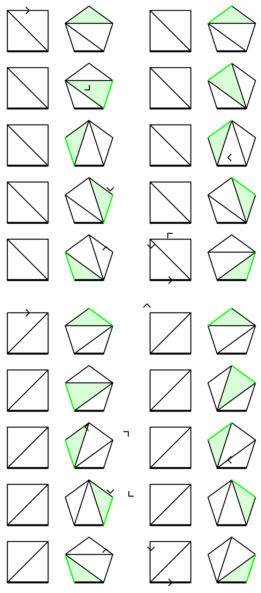

Catalan Number¶
The Catalan numbers are a sequence of integers named after the mathematician Eugène Charles Catalan.
The \(n\)th Catalan number is
\[ C_n = \frac{1}{n+1}\binom{2n}{n}, \quad n \ge 0. \tag 1 \]
The fist Catalan numbers are listed below.1
\[ \begin{matrix*}[r] n & 0 & 1 & 2 & 3 & 4 & 5 & 6 \\ C_n & 1 & 1 & 2 & 5 & 14 & 42 & 132 \end{matrix*} \]
Alternate forms¶
The definition immediately derives that
\[ C_n = \frac{(2n)!}{n!(n+1)!}, \quad n \ge 0. \tag 2 \]
For \(n > 1\), expanding the equation above,
\[ \begin{aligned} C_n &= \frac{(2n)!}{n!(n+1)!} \\ &= \frac{\prod_{k=1}^{2n}k}{\prod_{k=1}^{n}k\prod_{k=1}^{n+1}k} \\ &= \frac{(n+1)(n+2)(n+3)\cdots(2n-1)(2n)}{1\cdot 2\cdot 3\cdots (n-1)\cdot n\cdot (n+1)} \\ &= \frac{(n+2)(n+3)\cdots(2n-1)(2n)}{2\cdot 3\cdots (n-1)\cdot n} \\ &= \prod_{k=2}^n \frac{n+k}{k}. \end{aligned} \tag 3 \]
For a recurrence relation
\[ \begin{aligned} C_n/C_{n-1} &= \frac{(2n)!/(2n-2)!}{(n!(n+1)!)/((n-1)!n!)} \\ &= \frac{2(2n-1)}{n+1}. \end{aligned} \]
therefore
\[ \begin{aligned} C_0 &= 1 \\ C_n &= \frac{2(2n-1)}{n+1}C_{n-1},\quad n > 0. \tag 4 \end{aligned} \]
Another important recurrence relation is
\[ \begin{aligned} C_0 &= 1 \\ C_n &= \sum_{i=0}^{n-1}C_iC_{n-i-1},\quad n > 0, \tag 5 \end{aligned} \]
and it can be proved by the generating function23.
Applications in combinatorics¶
Binary trees with \(n\) nodes¶
There are \(C_n\) structurally different binary trees with \(n\) nodes.
If the left subtree of the root has \(i\) nodes, the right subtree has \(n-1-i\) nodes. This immediately leads to the recurrence relation \((5)\). It is essentially the same for the number of associations of \(n\) applications of a binary operator.
\(n\) pairs of correctly matched parentheses¶
There are \(C_n\) different sequences of \(n\) pairs of parentheses that are correctly matched.
\[ \large ()()()\quad (())() \quad ()(()) \quad (()()) \quad ((())) \]
A sequence of parentheses is correctly matched if and only if:
- any prefix of the sequence contains no more close parentheses than open parentheses,
- total number of open and close parentheses are equal.
Re-interpreting an open parenthesis as a step rightwards and a close parenthesis as a step rightwards, \(C_n\) counts the number of different monotonic lattice paths in \(n\times n\) square cells from bottom left corner to top right corner that do not cross above the diagonal, as shown below.

It is obvious that there are \(\binom{2n}{n}\) monotonic lattice paths without constraint of the diagonal, because one can choose arbitrary \(n\) steps upwards from \(2n\) steps in a path.
We define exceedance of a path to be the number of steps upwards in the path, and the set of all paths of exceedance \(k\) in a \(n\times n\) grid are denoted by \(P_n^k\). All possible exceedances are \(k = 0, 1, 2, \cdots, n\), as in \(P_n^0\) are the desired ones, and the paths in \(P_n^n\) stays above the diagonal.
By showing that there is a bijection between \(P_n^i\) and \(P_n^{i-1}\) for any \(i = 1, 2, \cdots, n\), we can prove that all \(P_n^k\) for \(k = 0, 1, 2, \cdots, n\) have the same size. Because there are \(n+1\) possible exceedances, the desired paths, i.e. the paths of zero exceedance \(P_n^0\), account for \((n+1)\)th of all possible \(\binom{2n}{n}\) monotonic lattice paths. Therefore there are \(C_n\) desired paths according to formula \((1)\).
The forward part of the bijection from \(P_n^k\) to \(P_n^{k-1}\) can be established by swapping the sections before and after the first step rightwards ending on the diagonal of a bad path (the black one) in all paths in \(P_n^k\), thus reducing the exceedance by 1.

Similarly, the backward part of the bijection from \(P_n^{k-1}\) to \(P_n^k\) is swapping the sections before and after the last step rightwards starting from the diagonal, increasing the exceedance by 1. The following diagram shows all possible swapping in a \(3\times 3\) grid.

Divisions of a convex polygon into \(n\) triangles¶
The Catalan numbers are the answer for Euler's polygon division problem. Explicitly, a triangulation of a convex \((n+2)\)-gon divides the polygon into \(n\) triangles by \(n-1\) lines, and \(C_n\) counts the number of different triangulations of a convex \((n+2)\)-gon. All possible triangulations of a convex 4-gon (quadrilateral), 5-gon (pentagon) and 6-gon (hexagon) are listed below4.

We denote the number of triangulations of a convex \((n+2)\)-gon by \(t_n\). Next, we will prove this sequence for \(n\in N\) is the Catalan numbers, that is, \(t_n = C_n\). In the following proof, we view a triangulation of a convex \((n+2)\)-gon as a graph
\[ T_{n+2} = \langle V(T_{n+2}), E(T_{n+2}) \rangle, \]
where \(T_{n+2}\) is the triangulation, \(V(T_{n+2})\) is the set of \(n+2\) vertices in this polygon and \(E(T_{n+2})\) is the set of \(2n+1\) edges, comprising \(n+2\) sides and \(n-1\) internal edges.
For a convex \((n+2)\)-gon, \(A\) is defined to be the set of triples \(\langle T_{n+2}, e, d \rangle\), where
- \(T_{n+2}\) is one of the triangulations of this polygon, with a total of \(t_n\) possible choices;
- \(e \in E(T_{n+2})\) is one of the edges in \(T_{n+2}\), with a total of \(2n+1\) possible choices for each \(T_{n+2}\);
- \(d \in \{1, -1\}\) is one of the possible directions of \(e\), with a total of 2 possible choices for each \(e\).
The size of \(A\) is the product of number of choices of each item in the triple
\[ |A| = 2(2n+1)t_n. \]
For the triangulations of a convex \((n+3)\)-gon, we select one of its sides to be the "base", and \(B\) is defined to be the set of pairs \(\langle T_{n+3}, e' \rangle\), where
- \(T_{n+3}\) is one of the triangulations of this polygon, with a total of \(t_{n+1}\) possible choices;
- \(e'\) is one of the sides of this polygon, except the base, with \(n+2\) possible choices.
Similarly, the size of \(B\) is
\[ |B| = (n+2)t_{n+1}. \]
We show that there is a bijection between \(A\) and \(B\). For any element in \(A\), split the selected edge \(e\) into two along its direction \(d\), resulting in two different edges sharing the start point. Connecting the two end points, the original edge is expanded into a triangle. Thus, \(T_{n+2}\) is transformed into \(T_{n+3}\) with a newly formed side \(e'\).
The other direction of the bijection collapses the selected edge \(e'\) in \(T_{n+3}\), thus the triangle that comprises \(e'\) shrinks into an edge \(e\), with the direction \(d\) points to the disappeared side.
The base edge serves as a standard for comparison, which remains unchanged during the transformation in the bijection and do not disappear when going from \(T_{n+2}\) to \(T_{n+3}\).
The diagram below illustrates this bijection in the case \(n = 2\). The base edges are depicted in thicker lines. The newly formed triangles and edges are shown in green.

Hence \(A\) and \(B\) are of equal sizes, that is, \(2(2n+1)t_n = (n+2)t_{n+1}\). Applying \(t_1 = 1\) we have \(t_n = C_n\) according to equation \((4)\).